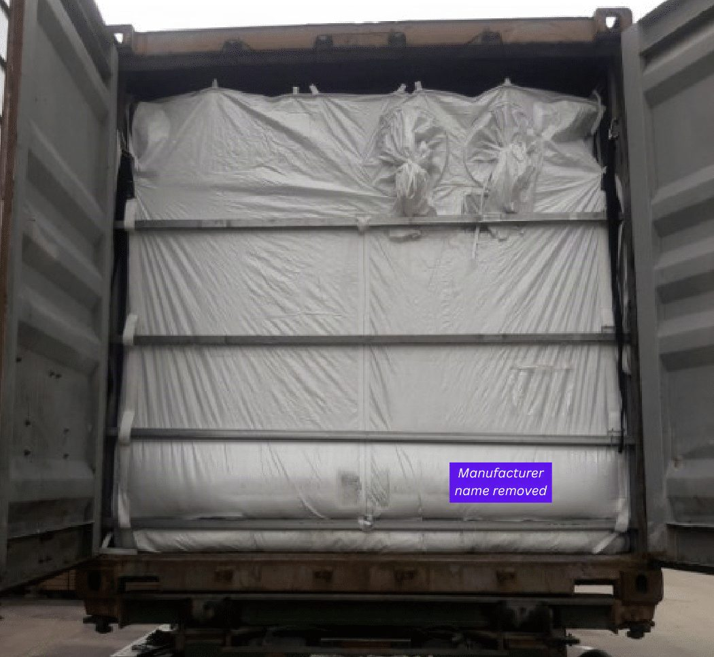
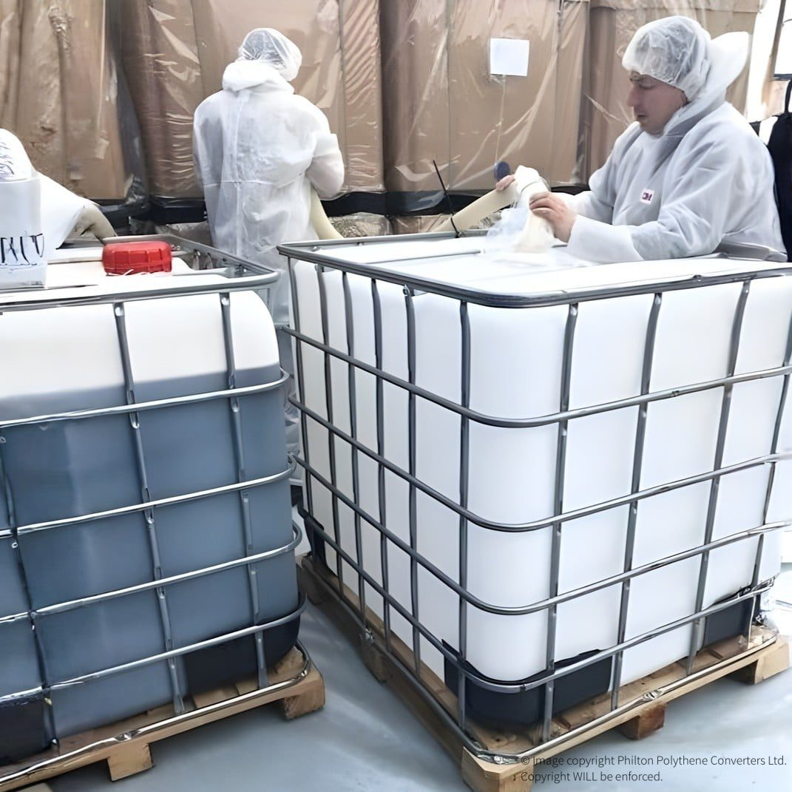
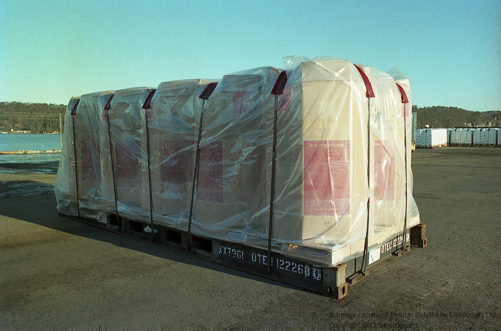
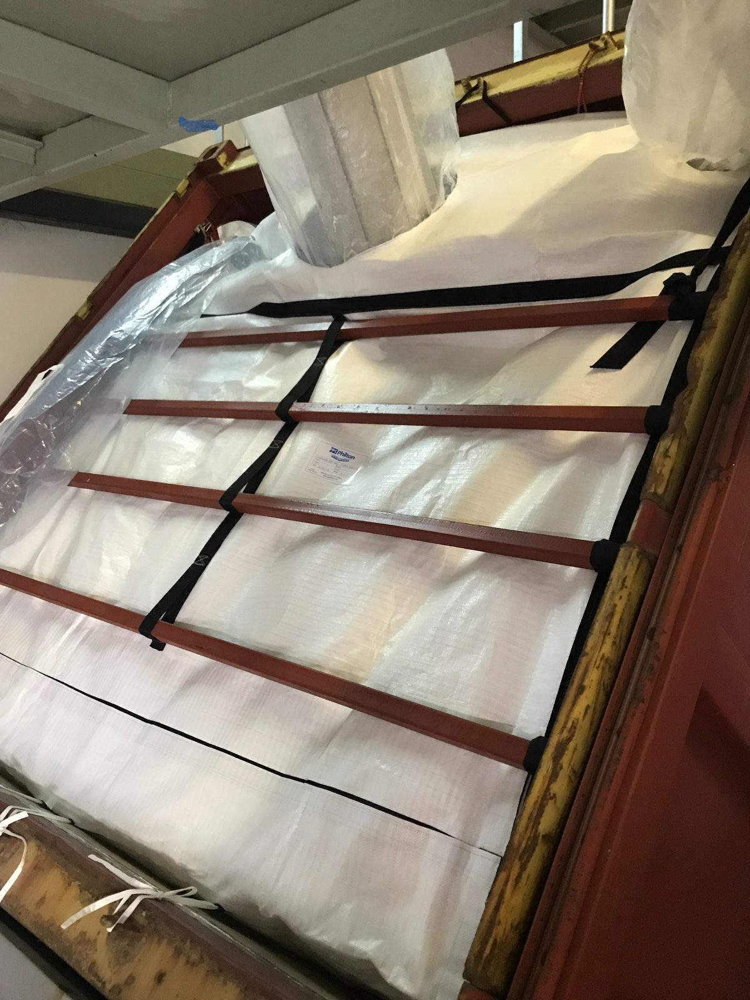

Service
Dry Bulk Emergency Response
Our Emergency Response Team handles dry bulk emergencies across cargo types, packaging formats and containers — whether the issue happens during loading, transport or discharge.
Fast recovery
Repacked and moving again, not written off
Based in the UK, we offer rapid emergency response across Europe and can assist in many other areas of the world — recovering damaged product and repacking it to prevent further loss.
- As manufacturer, we can rapidly supply new or customised replacement packaging
- Experienced engineers investigate the incident and provide root-cause analysis
What we handle
Three core services
Dry bulk repacking
Recovering damaged product and repacking it professionally to prevent further loss.
Replacement packaging
Rapid supply of new or customised packaging to replace damaged items and secure cargo for continued transport.
Technical assessment
Investigating the incident, evaluating cargo and packaging condition, and providing detailed root-cause analysis.
Products handled
Free-flowing dry commodities
Packaging solutions provided
What we repack into
Container liners
Replacement dry bulk container liners, fitted on site where needed.
Containment bags & enclosures
Containment bags, liners and enclosures for compromised loads.
Custom-shaped covers
Bespoke covers, bags and liners engineered around the cargo.
Also available
Support alongside your recovery
Cross-pumping for mixed shipments
Emergency Flexitank cross-pumping where a shipment includes liquid cargo too.
Logistics guidance
Technical guidance and logistics optimisation to get your shipment moving again.
Responsible disposal
Removal and environmentally responsible disposal of damaged materials.
Dry bulk cargo damaged in transit?
Tell us the commodity, packaging and location — our Emergency Response Team will advise on next steps.